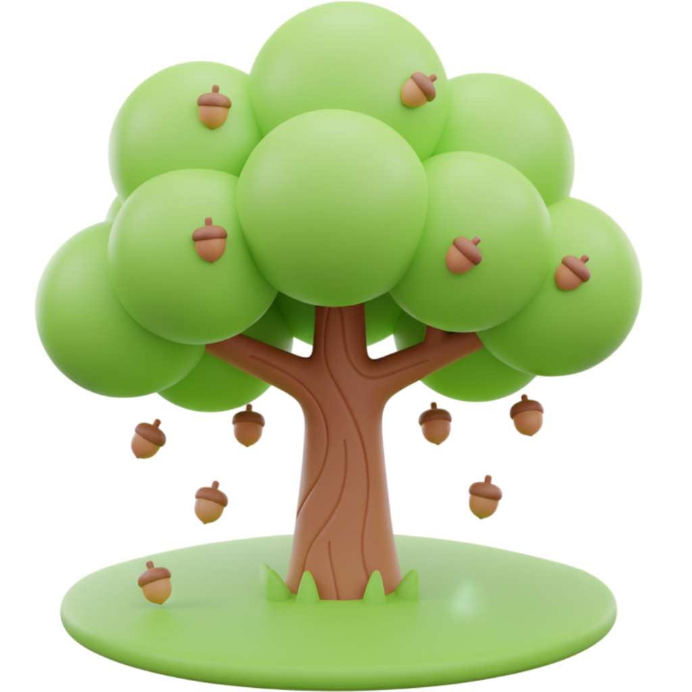
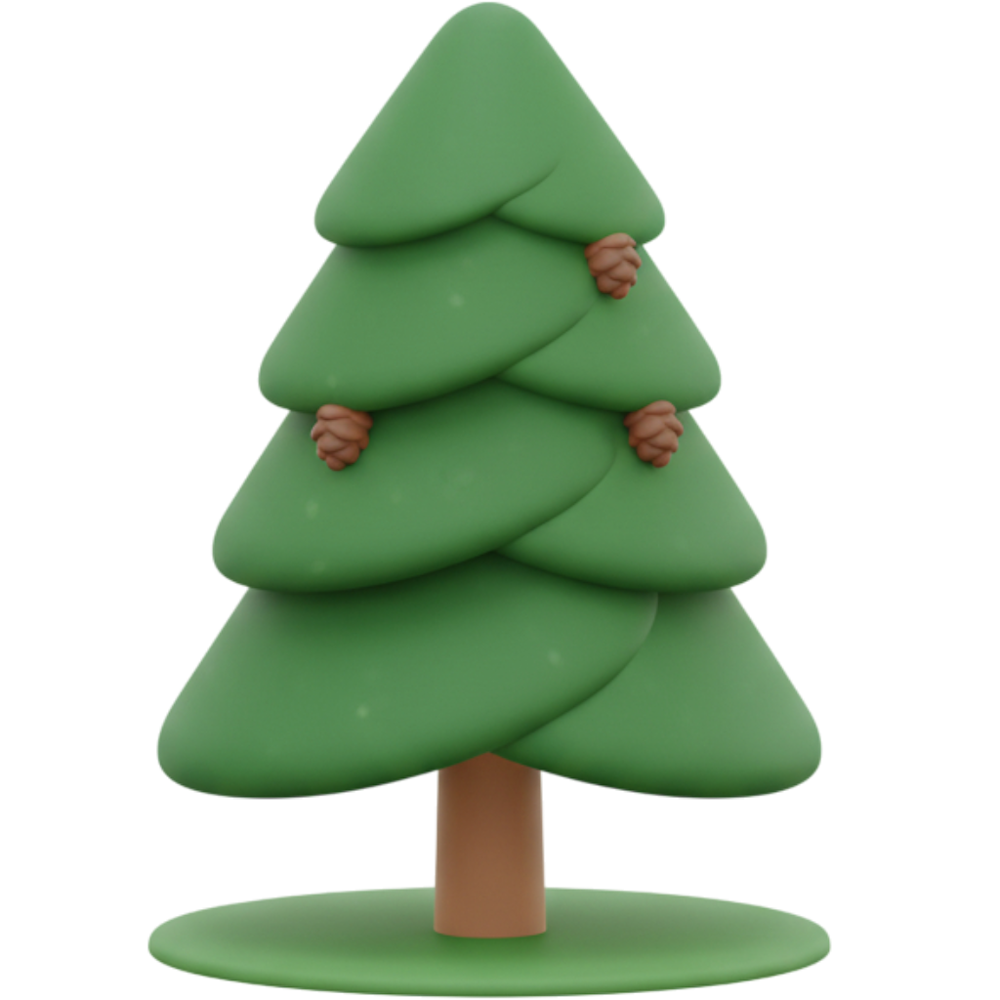
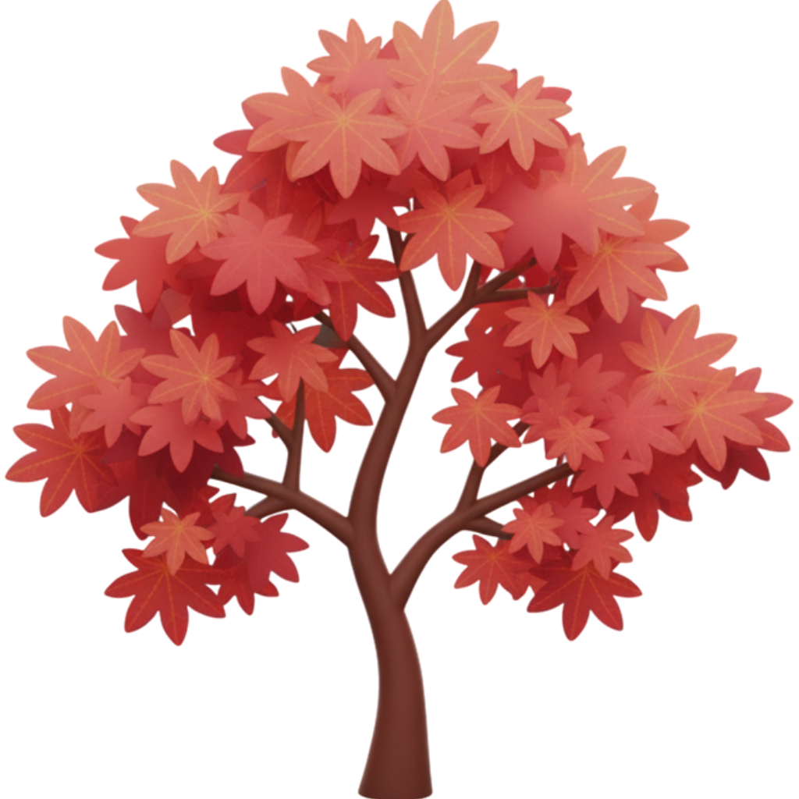

Enciclopedia Digital del Bosque
Explora las especies que puedes cultivar y sus propiedades ambientales.

Pino Silvestre
Pinus sylvestris
Crece rápido en suelos pobres. Excelente para reforestación.
Ver Ficha

🌻
🌵
Cactus Saguaro
Carnegiea gigantea
Icónico cactus del desierto. Almacena grandes cantidades de agua.
Ver Ficha
🌿
🌹
🎋
Bambú Gigante
Dendrocalamus giganteus
La hierba más grande del mundo. Material de construcción sostenible.
Ver Ficha
🌴
Palmera Datilera
Phoenix dactylifera
Cultivada por sus dulces frutos (dátiles). Resiste climas áridos.
Ver Ficha
🌿
Helecho de Boston
Nephrolepis exaltata
Popular planta de interior. Ayuda a purificar el aire.
Ver Ficha
🌷
Tulipán
Tulipa gesneriana
Anuncia la primavera con sus colores vibrantes. Originario de Asia Central.
Ver Ficha
🌾
Trigo
Triticum aestivum
Uno de los cereales más cultivados del mundo, base de la alimentación.
Ver Ficha
🍄
Seta de Ostra
Pleurotus ostreatus
Hongo comestible común. Crece en madera muerta y descompone materia.
Ver Ficha
🌸
Orquídea Phalaenopsis
Phalaenopsis sp.
Orquídea popular y fácil de cuidar en interiores. Larga floración.
Ver Ficha
🌳
Jacarandá
Jacaranda mimosifolia
Famoso por sus espectaculares flores azul-violeta en primavera.
Ver Ficha
🌵
Aloe Vera
Aloe barbadensis miller
Conocida por el gel calmante de sus hojas. Fácil de cuidar.
Ver Ficha
🌸
Cerezo Japonés (Sakura)
Prunus serrulata
Venerado por su impresionante y corta floración primaveral.
Ver Ficha
🌿
🌳
🌲
🌿
Romero
Rosmarinus officinalis
Resistente a la sequía, muy usado en la cocina mediterránea.
Ver Ficha
🌿
Monstera (Costilla de Adán)
Monstera deliciosa
Popular planta de interior por sus grandes hojas fenestradas.
Ver Ficha
🌹
🌲
Bonsái (Pino Blanco)
Pinus parviflora 'Bonsai'
Forma de arte japonés que cultiva árboles en miniatura.
Ver Ficha
🌳
Eucalipto Arcoíris
Eucalyptus deglupta
Único por su corteza multicolor que se desprende en tiras.
Ver Ficha
🌿
Planta de Jade
Crassula ovata
Se cree que trae buena suerte. Muy resistente y fácil de propagar.
Ver Ficha
🌳